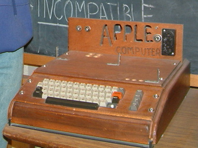
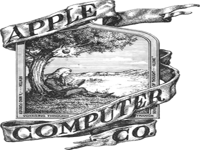

Početak modernog kompjuterskog doba i samog Applea je bila 1975. kada na tržište izlazi procesor MOS Technology 6502 koji ruši dotadašnje procesorske ciujene s 175 na 25 američkih dolara bez pratećeg chipseta postavši tako dovoljno jeftin za kompjuterske entuzijaste među kojima su bili Steve Wozniak, tada zaposlen u HPu i Steve Jobs. Kako se prvi njihov pokušaj našao u tehničkim problemima oni su krajem te godine zamolili i dobili tehničku pomoć od Chucka Peddlea, dizajnera 6502-ke . Rezultat tog prvog pokušaja, dobivene pomići i Wozniakove tehničke briljantnosti je bio kompjuter Apple I, koji se pojavio na tržištu 11.4. 1976 godine. Sveukupno je bilo prodano oko 200 tih kompjutera, kojih se koji mjesec ranije - što se iz današnje perspektive smatra katastrofalnom poslovnom odlukom - odrekao Hewlett-Packard i, nezainteresiran za ugrađenu tehnologiju, Wozniaku kao svom inžinjeru dao slobodne ruke da s njom radi što želi. Wozniak je tada iskoristio priliku te je tako osnovana kompanija Apple 1.4. 1976. Manje od godine dana nakon što su pružili pomoć, menadžeri MOSa su došli na novi sastanak s Jobsom i Wozniakom kako bi kupili njihovu kompaniju, motivirani Wozniakovim tehničkim inovacijama. Na kraju je ta kupovina propala pošto su menadžeri MOS-a zaključili da je 100.000 $ prevelika cijena za Apple. S druge strane je penzionirani Intelovac i milioner Mike Markulla je obezbjedio Jobsu i Wozniaku financijsku injekciju nužnu za novi kompjuter,dok je ujedno njegovo znanje u upravljanju kompanijom odigralo odlučujuću odluku u njenom organiziranju.
Predstavljanje novog kompjutera se dogodilo 15.4. 1977. godine na sajmu West Coast Computer Faire, gdje su svi tadašnji proizvođači kućnih kompjutera pokazali svoje primjerke. Iako je Apple kasnije tvrdio suprotno, pobjednik tog okupljanja je bio Commodore Pet kojeg je časopis Personal Computer stavio na prvo mesto; Apple II je praktički bio ignoriran tako da ga časopis Byte uopće ne spominje u svojim reportažama. Osnovni tehnički problem Applea se našao u činjenici da je on kupovao dijelove od kompanije Commodore International i od njih sastavljao Apple II, dok je Commodore od praktički tih istih dijelova sastavljao i prodavao svoj Commodore Pet. Zbog toga je Commodore Pet koštao 595 $, a Apple II 1298 $. Bez obzira na to Jobs i Wozniak su bili zapaženi na sajmu; kada se iste godine Sousson, jedan od Commodoreovih inženjera, inače milioner, posvađao sa šefom Commoderea, došao je u Apple davši mu još jednu enormnu financijsku injekciju. Time je zatvorena Appleova financijska infrastuktura za masovnu proizvodnju svojih kompjutera.Časopis Byte je u martu 1978. ispravio svoju prvobitnu grešku po pitanju Apple II kompjutera, nazvavši ga dokazom koncepta kućnog kompjutera koja mora dalje evoluirati; utvrdio je posjeduje mogućnost prikazivanja visoke rezolucije, te da uz dodatak memorije obećava mogućnost nastanka igraće mašine.
